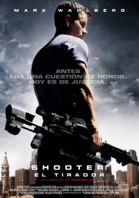

.png)
Edge of tomorrow

| Estreno | 6 de junio de 2014 (Estados Unidos y Canadá) |
| Duración | 113 minutos |
| Protagonistas | Tom Cruise Emily Blunt Bill Paxton Brendan Gleeson |
| Producción | Erwin Stoff Tom Lassally Jason Hoffs Gregory Jacobs Jeffrey Silver |
| Información obtenida de | https://es.wikipedia.org/wiki/Wikipedia:Portada |
Sinopsis:
La historia se desarrolla en un futuro cercano en el que una raza alienígena tipo colmena, llamada Mimics, ha llegado a la Tierra realizando continuas agresiones, reduciendo a escombros grandes ciudades y dejando millones de víctimas humanas a su paso. Ningún ejército del mundo puede hacer frente a la velocidad, brutalidad o clarividencia de los militarizados combatientes Mimic o de sus telepáticos comandantes. Pero ahora los ejércitos del mundo han unido sus fuerzas para realizar una ofensiva de largo alcance contra las hordas alienígenas, sin que haya una segunda oportunidad.
El Teniente Coronel Bill Cage (Cruise) es un oficial que nunca ha visto un día de combate cuando es degradado sin ceremonia alguna y después asignado sin entrenamiento y sin un buen equipamiento a lo que equivale a poco más que una misión suicida. Cage muere en unos minutos, consiguiendo llevarse a un Alpha con él. Pero, de manera increíble, se despierta al comienzo del mismo día y se ve obligado a combatir y morir de nuevo... una y otra vez. El contacto físico directo con el alienígena le ha hecho entrar en un bucle temporal, condenándole a vivir el mismo y brutal combate una y otra vez.
Pero cada vez Cage se hace más fuerte, inteligente y capacitado para enfrentarse a los Mimics con creciente habilidad, junto con la guerrera de las Fuerzas Especiales Rita Vrataski (Blunt), que ha vencido a más Mimics que ninguna otra persona en la Tierra. Mientras Cage y Rita luchan contra los alienígenas, cada una de las batallas repetidas se convierte en una oportunidad para encontrar la clave para aniquilar a los alienígenas y salvar la Tierra.
Información obtenida de:Lahiguera.net/
Shooter
| Estreno | 23 de Marzo del 2007(Estados Unidos) |
| Duración | 126 minutos |
| Protagonistas | Mark Wahlberg Michael Peña Danny Glover Kate Mara Elias Koteas Rhona Mitra Rade Šerbedžija Ned Beatty |
| Producción | Lorenzo di Bonaventura |
| Información obtenida de | https://es.wikipedia.org/wiki/Wikipedia:Portada |
Sinopsis:
Relata la historia de un espléndido tirador que se encuentra de pronto en medio de una pesadilla: es acusado de haber querido matar al presidente. Sumergido en una creciente espiral de terror y conspiración, el tirador encabeza una carrera contrarreloj para probar su inocencia, perseguido por la policía y por una sospechosa organización que quiere destruir los secretos que ha descubierto.
En esta película de acción, Mark Wahlberg encarna a Bob Lee Swagger, un ex francotirador de los Marines que creía haber dejado atrás su antigua profesión después de haber sido testigo de una terrible traición. A pesar de haberse recluido en un lejano escondite en las montañas, el coronel Isaac Johnson (Danny Glover), un oficial retirado, consigue encontrarle y le convence de que su país le necesita. Según Johnson, alguien planea asesinar al presidente de Estados Unidos y el único que puede impedirlo es Swagger, gracias a su experiencia y conocimientos de la balística de largo alcance.
El ex tirador acepta a regañadientes volver a servir a su país una vez más, pero no sabe que toda la misión es una trampa ideada por una oscura camarilla gubernamental con planes muy especiales. De pronto, descubre que aparece en todos los titulares acusado de haber intentado asesinar al presidente. Perseguido, sin un agujero donde esconderse, con la única ayuda de una mujer desconcertada (Kate Mara) a la que acaba de conocer y a un joven agente del FBI (Michael Peña), Swagger libra una batalla desesperada. Tiene que desvelar quiénes son los auténticos asesinos antes de que le maten. Pero Swagger no tarda en descubrir que además de su vida, hay mucho más en juego; está a punto de alzar el velo y sacar a la luz una terrible conspiración que nace en el mismo corazón del gobierno estadounidense.
Información obtenida de:LaHiguera.net
Misión de rescate

| Estreno | 24 de abril de 2020(Estados Unidos) |
| Duración | 117 minutos |
| Protagonistas | Chris Hemsworth Rudhraksh Jaiswal Randeep Hooda Golshifteh Farahani David Harbour |
| Producción | Anthony Russo Joe Russo Chris Hemsworth Mike Larocca Eric Gitter |
| Información obtenida de | https://es.wikipedia.org/wiki/Wikipedia:Portada |
Sinopsis:
Después de sufrir el secuestro de su hijo, un hombre de negocios, que en realidad es una importante figura en el narco, contrata a Tyler, un mercenario (Chris Hemsworth) sin ánimos de vivir y sumido en una terrible depresión, para adentrarse en la ciudad de Dhaka, Bangladesh, e intentar recuperarlo cueste lo que cueste. Sin embargo, la misión se complicará cuando se dé cuenta que la policía está del lado del narcotraficante que ha secuestrado a Ovi y no dejará irlo tan fácil. Esta cinta de acción es dirigida por Sam Hargrave, doble de riesgo de Chris Hemsworth, escrita por Joe Russo (Avengers: Endgame 2019) y protagonizada por Chris Hemsworth (Thor: Ragnarok 2017) y David Harbour (Stranger Things 2019).
Información obtenida de:SENSACINE
Alita:ángel de combate

| Estreno | 14 de febrero de 2019(Estados Unidos) |
| Duración | 122 minutos |
| Protagonistas |
Rosa Salazar Christoph Waltz Keean Johnson Mahershala Ali Ed Skrein Jackie Earle Haley Jennifer Connelly Lana Eiza González Reyna Marko Zaror Casper Van Dien Idara Victor Jorge Lendeborg Jeff Fahey Rick Yune Josh Peck Derek Mears Gregg Berger Edward Norton Michelle Rodriguez Jai Courtney Alex Livinalli |
| Producción |
James Cameron Jon Landau Robert Rodriguez |
| Información obtenida de | https://es.wikipedia.org/wiki/Wikipedia:Portada |
Sinopsis:
Ángel de combate, una aventura épica de esperanza y empoderamiento basada en la serie de novelas gráficas manga de Yukito Kishiro. Cuando Alita (Rosa Salazar) se despierta en un mundo futuro que no reconoce sin poder recordar quién es, es acogida por Ido (Christoph Waltz), un compasivo ciber-doctor que se da cuenta de que en algún lugar del núcleo de este cíborg abandonado se encuentran el corazón y el alma de una joven con un pasado extraordinario. Mientras Alita aprende a orientarse por su nueva vida y las peligrosas calles de Ciudad de Hierro, Ido intenta protegerla de su misterioso pasado mientras que su nuevo amigo, Hugo (Keean Johnson), un chico de la calle, se ofrece a ayudarla a desencadenar sus recuerdos. No obstante, solo cuando las fuerzas mortales y corruptas que dirigen la ciudad, encabezadas por Vector (Mahershala Ali), persiguen ha Ido y Alita, esta descubre una pista de su pasado: posee habilidades únicas de lucha que parecen innatas y aquellos en el poder no se detendrán ante nada para controlarlas. Si logra mantenerse fuera de su alcance, podría ser la clave para salvar a sus amigos, a su familia y al mundo que ha aprendido a amar.
Información obtenida de:LaHiguera.net
The Avengers

| Estreno | 4 de mayo de 2012 (Estados Unidos) |
| Duración | 143 minutos |
| Protagonistas |
Robert Downey Jr. Chris Evans Mark Ruffalo Chris Hemsworth Scarlett Johansson Jeremy Renner Tom Hiddleston Clark Gregg Cobie Smulders Stellan Skarsgård Samuel L. Jackson |
| Producción | Kevin Feige |
| Información obtenida de | https://es.wikipedia.org/wiki/Wikipedia:Portada |
Sinopsis:
Cuando un enemigo inesperado amenaza la seguridad del planeta y de sus habitantes, Nick Fury (Samuel L. Jackson), director de SHIELD, monta un dispositivo con todos los hombres capaces de preservar a la humanidad del caos. El enemigo es tan poderoso, que necesita que todos los superhéroes luchen juntos y formen un equipo compacto. Ellos serán: el Capitán América (Chris Evans), Thor (Chris Hemsworth), Iron Man (Robert Downey Jr.), Hulk (Mark Ruffalo), Ojo de Halcón (Jeremy Renner) y la Viuda Negra (Scarlett Johansson).
Basado en los cómics de Marvel, el film está dirigido por Joss Whedon (Buffy Cazavampiros, Angel), que ya practicó el género en su primera película, Serenity.
Información obtenida de:SENSACINE